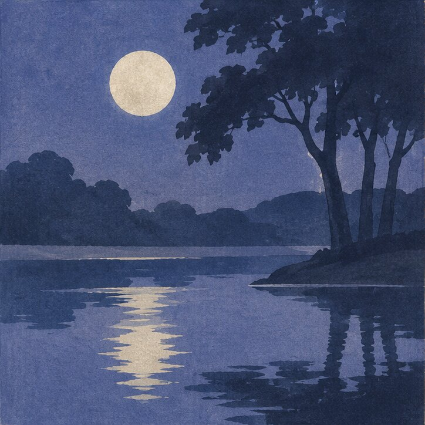

Claude Debussy · Suite bergamasque
Clair de lune

The opening leaves so much room between chords that the silences start to feel like part of the melody. Listen for the point where the left hand starts to ripple. The music has hardly grown louder, but suddenly it has somewhere to go.
When the opening returns, the same spaces sound different. The movement in the middle is still fresh in the ear.
My recording
Recording to come.